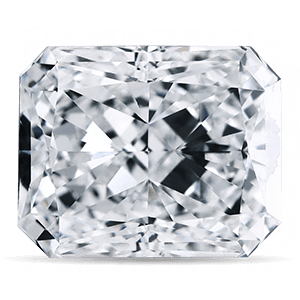
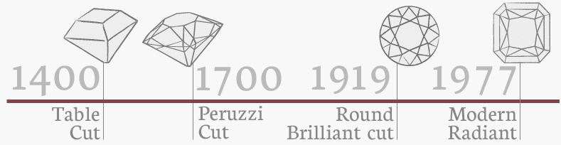

Radiant:
The Radiant is a unique and hybrid cut comprised of 70 facets and distinctive trimmed edges. Square-shaped Radiants typically have ratios between 1.00 and 1.05 while rectangular Radiants can have ratios from over 1.05 anywhere up to 1.50. Its versatile design combines the brilliance and depth of the round, Emerald and Princess cuts making it a popular choice for all types of jewellery. As it is a patented cut, it may be referred to as a Cut-Cornered Square on a laboratory certificate (eg. GIA or AGS), or a Rectangular Brilliant if it has a ratio greater than 1.05.
The first Radiant cut was designed by Henry Grossbard of the Radiant Cut Diamond Company (RCDC) in 1977. Prior to this invention, all diamonds with square or step-cut edges appeared less brilliant. Grossbard invented a hybrid cutting style that revolutionised the industry's perceptions towards square or rectangular stones as he managed to create a step-cut diamond that possessed equal brilliance to triangular-faceted diamonds such as the oval and pear. The Radiant is also the first cut to have a brilliant-facet pattern applied to both the crown & pavilion. RCDC launched the Original Radiant Cut diamond brand in 2002.
